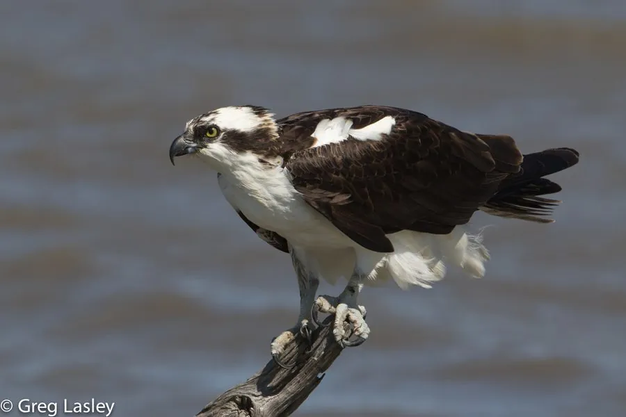

鸟类 · 动物界
鹗 Pandion haliaetus

专门捕鱼的猛禽，会从高空俯冲入水抓鱼，脚趾可反转、羽毛防水，在全球各大洲的湖泊与海岸都能见到。
- 分类
- 门脊索动物门纲鸟纲目鹰形目科鹗科属鹗属
- 栖息环境
- 湖泊、河流、水库、海岸与河口，巢多筑于高处或礁石上
- 地理分布
- 除南极外全球广泛分布，中国各地水域均有分布或迁徙经过
- 保护级别
- IUCN 无危（LC）；中国国家二级保护动物
物种志
鹗体长 50–66 cm，体重 0.9–2.1 kg，翼展 127–180 cm。它的背部和翅膀呈深褐色，胸腹部白色，头部白色并有一道深色纵纹穿过眼睛，翅膀下侧有深色斑块，飞行时翅膀常呈“M”形弯曲。它的脚趾可以反转，外趾能向后翻，方便抓住滑溜的鱼。
鹗广泛分布于全球的湖泊、河流、海岸和水库，除南极外各大洲都有，中国各地水域有分布或迁徙经过。它们以鱼为食，常在水面上空盘旋，发现鱼后收翅俯冲入水，用脚爪抓起猎物，再飞到高处享用。鹗的羽毛能排开水分，抓鱼后可以迅速起飞。繁殖期在树上、电线杆或礁石上筑大型巢，每窝产卵 2–4 枚，孵化约 35–38 天。由于 DDT 污染曾导致种群下降，禁用后已恢复，目前被列为无危物种，中国将其列为国家二级保护动物。
形态与习性
- 食性鱼类为主
- 体长50–66 cm
- 体重0.9–2.1 kg
- 翼展127–180 cm
- 繁殖每窝 2–4 枚卵，孵化约 35–38 天
- 寿命野外约 15–20 年
- 抓鱼脚趾可反转，外趾向后翻以抓住滑溜的鱼
趣味知识
- 鹗的脚趾可以反转，外趾向后翻，帮助抓住滑溜的鱼。
- 它从高空俯冲入水抓鱼，出水后抖落水珠，羽毛能迅速变干。
- 鹗常把巢筑在电线杆、灯塔和礁石上，巢越用越大。
- 鹗的翅膀下侧有深色斑块，飞行时翅膀呈“M”形。